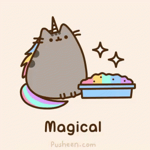

Day 76
Reading
Math
- Read through the explanation of this practice problem on adding fractions with unlike denominators.
- Review adding fractions with unlike denominators: Complete this worksheet.
- When you are finished, review your answers with those on the second page.
History
Today is Martin Luther King, Jr. Day!
- Watch this short video, and read the text below about Martin Luther King Jr.'s life.
- Here is his famous powerful speech: "I Have a Dream" video.
Words of the Day: Words Related to MLK!
- Write the words in this list in your notebook.
- Be sure you click on each workd or phrase and read the definition.
- Since the definitions are long, do not write them in the book, but be sure you understand them.
Art
Draw Martin Luther King!

Day 77
Reading
Words of the Day:
Write the two words below in your vocabulary book along with their short definitions. Also, click on the link for each word, and read more about the definition.
- simile - a figure of speech expressing a resemblance between things; this comparison usually uses the words "like" or "as"
- metaphor - a figure of speech that suggests a non-literal similarity
Grammar
Simile and metaphor review: Complete this worksheet.
Math
- Complete this worksheet on adding and subtracting fractions with unlike denominators.
- This worksheet includes some word problems, but they are all based on the same topic!
- When you are finished, review your answers here.
Social Studies
- Review: Did you learn the names of all the presidents in order? Watch these videos again to memorize all the presidents!
- Watch this video to memorize the names and locations of the 50 states.
Day 78
Reading
Words of the Day:
Write the two words below in your vocabulary book along with their short definitions. Also, click on the link for each word, and read more about the definition.
- alliteration - use of the same consonant at the beginning of each word
- onomatopoeia - using words that imitate the sound they denote
Grammar
Math
- Review the instructions on converting a mixed number into an improper fraction next to this online calculator.
- Finish Brain Quest, p. 164: Bigger Products
- Use the online calculator above to check your answers. They are also in the back of the book.
- Complete this worksheet.
Day 79
Reading
Words of the Day: Review
- memoir - an account of the author's personal experiences
- personification - attributing human characteristics something that isn't human or to abstract ideas
- realism - the attribute of accepting the facts of life
Math
- Fraction addition practice on thatquiz.
- Instructions:
- Work the problems out in your notebook, then input each answer.
- Remember that you have to reduce each fraction. For example, if the answer is 2/4, you must enter 1/2.
- If the answer is equal to 1, enter 1/1.
- If the answer is an improper fraction greater than 1, leave the answer as a reduced improper fraction. For example, if the answer is 6/4, you must enter 3/2.
- If you want to retake the test, use the TEST student option.
History / Social Studies
The Constitution and the Executive Branch of the government
- Read this summary on the Constitution.
- Take the ten question quiz on the Constitution.
- The Executive Branch of the U.S. government carries out and enforces laws. It includes the President, Vice President, the Cabinet, executive departments, independent agencies, and other boards, commissions, and committees.
- Read this summary on the Executive Branch.
- Take the ten question quiz on the Executive Branch.
Day 80
Reading
Writing
Write a page on the following topic: Do you believe in horoscopes? Why or why not?
Words of the Day: Review
Math
- Fraction subtraction practice on thatquiz.
- Instructions:
- Work the problems out in your notebook, then input each answer.
- Remember that you have to reduce each fraction. For example, if the answer is 2/4, you must enter 1/2.
- If the answer is equal to 1, enter 1/1.
- If the answer is an improper fraction greater than 1, leave the answer as a reduced improper fraction. For example, if the answer is 6/4, you must enter 3/2.
- If you want to retake the test, use the TEST student option.
Math Activity
Follow the instructions in this video for a hands-on fraction activity.
Science
Light and Sound Waves
- Read Chapter 15 - Light and Sound Waves, pp. 143-156.
- Answer the questions on p. 157, then check your answers against those on p. 158.
- Watch these videos: